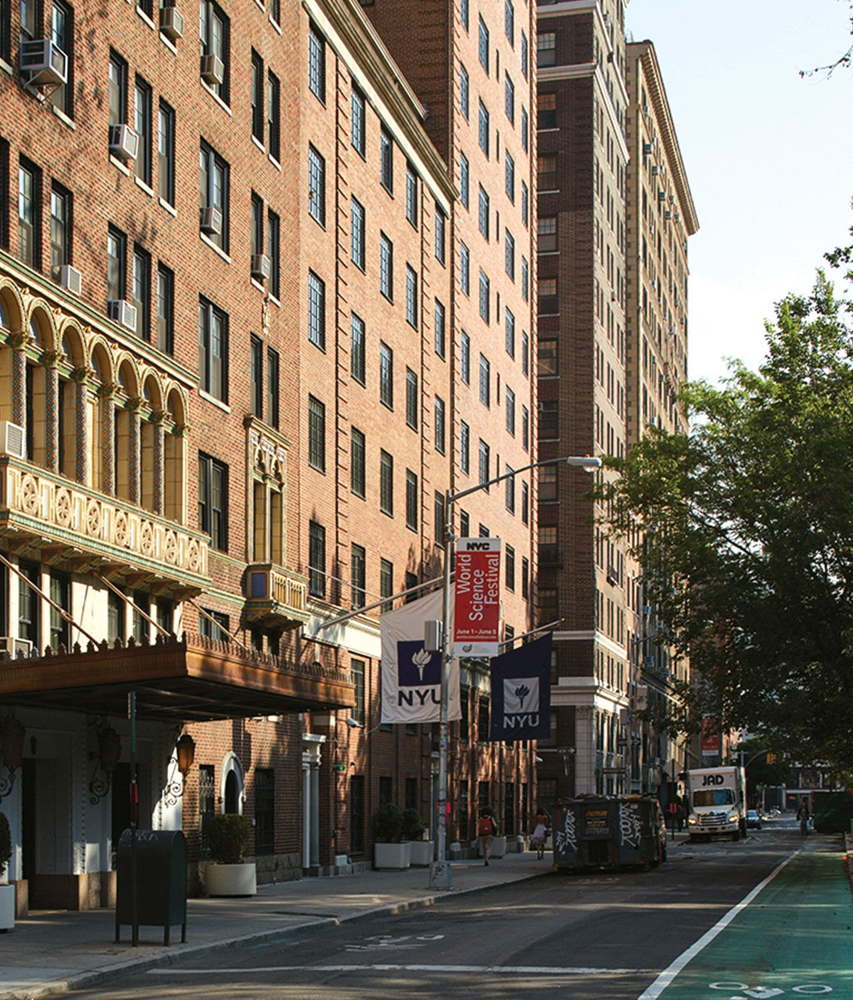

NYU Community
 Lipton Hall
특징
33 Washington Square West에 위치, 워싱턴 스퀘어 파크 바로 옆
약 700명의 1학년 학생 수용
수업, 도서관, Kimmel Center 등 주요 시설과 가까움
장점: 최상의 위치로 캠퍼스 접근성 뛰어남, 깔끔한 시설과 다양한 편의시설
단점: 카페테리아 밥 별로, 작은 방 크기
👍
← 메인으로 돌아가기